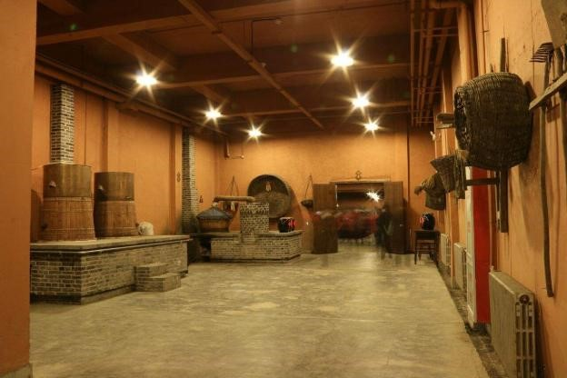

新闻
- 【06-28】农业农村部办公厅关于开展新型...
- 【06-25】农业部：支持饲料企业、畜禽养...
- 【06-23】加快数字乡村建设 推动传统农...
- 【06-20】立法促振兴 我国乡村旅游迎来...
- 【05-28】巩固拓展脱贫攻坚成果 重点做...
- 【05-26】2021年绿色有机地标工作重点...
- 【05-23】邢朝国 ：全面推进乡村振兴 建...
- 【05-18】从“乡”到“城”百年中国的...
- 【05-10】关于公示国家农民合作社示范社...
- 【04-28】《关于金融支持新型农业经营主...
- 【04-12】减贫奇迹铸丰碑 为人类减贫贡...
- 【04-10】脱贫攻坚成果与乡村振兴有效...
- 【04-08】中国共产党领导农村发展之路...
-
乡村景观规划可分为景观空间布局、景观空间营造、景观形态组织、景观细部描绘四个角度。如丁李楼，闲置绿地整改以游园形式为主，以绿化美化为主要手段，建设成为一个集文化、生态、景观、休憩为一体的绿色空间。
- 
乡村产业规划层面，团队主要根据村庄特点，因地制宜发展相应产业。如在对南朱营规划时，对村庄本身固有产业进行发展活化，考虑当地气候条件进行种植业的发展，充分发挥其种植优势，完善产业链条。在丁李楼的小米酒加工及丁河楼的变蛋，木条加工等产业规划
-
对于具有典型特色文化或特色产业的乡村，团队会通过设计特色旅游路线，来弘扬乡村特色，扩大乡村知名度，同时设计有关旅游民宿建筑来完善和带动乡村旅游业的发展，对于自然风貌良好，设计相关公共建筑，改造居民建筑，统一风格。
-
团队运用农产品所在地域的乡村文化元素，打造差异化的农产品品牌包装，通过典型性提取、整体性重组与现代性转换凸显农产品品牌包装的自然美。挖掘乡村聚落文化中能够代表乡村文化特色元素的部分。对乡村得特色进行整体性重组。